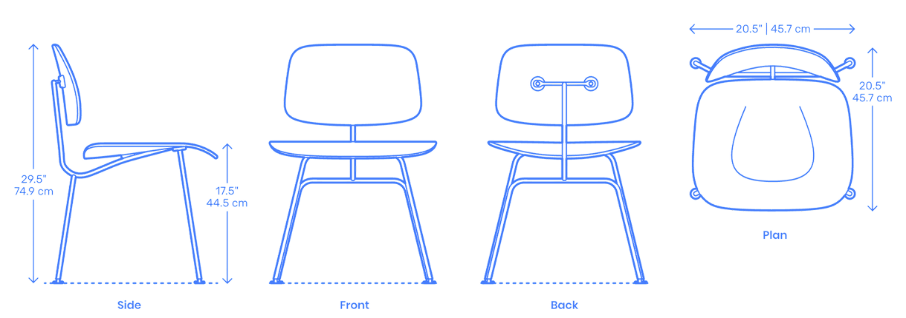

Interactive Chair Study
Take a Seat.
Discover one iconic chair through observation, drawing, interaction, and play.
Begin01
Meet
Before taking the chair apart, let's simply look. What makes this chair feel balanced, comfortable, and timeless?
02
Material Study
Explore how flat veneers are pressed into a curved plywood shell through bent lamination.
03
Blueprint
Study the chair through orthographic drawings and dimensions. These views reveal the proportions and construction behind the final form.

04
Build
Assemble the chair piece by piece.
05
Explore
Rotate and inspect the chair in 3D.
06
A Day in Use
A chair is not a static object. Across a day it shifts between focused work, conversation, meals, rest, and periods of vacancy. This temporal map shows how one chair participates in changing patterns of occupation.
The rhythm of sitting
Hover over an arc to inspect a moment
Temporal structure extends the precedent study beyond form and material. Mapping duration and intensity reveals when the chair supports private, productive, or social activity. In a future project, this same method could inform flexible programs, lighting, circulation, and thresholds that respond to changing occupancy throughout the day.